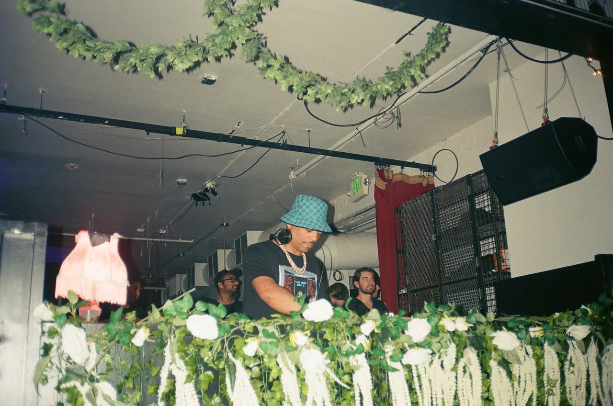
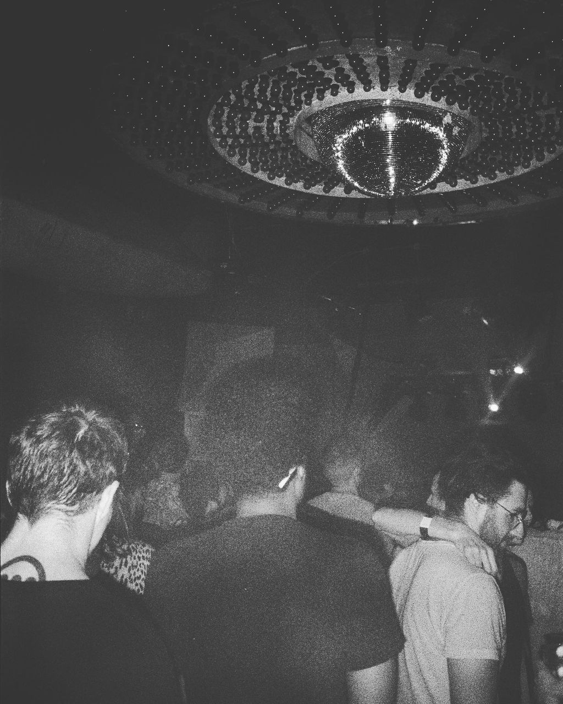
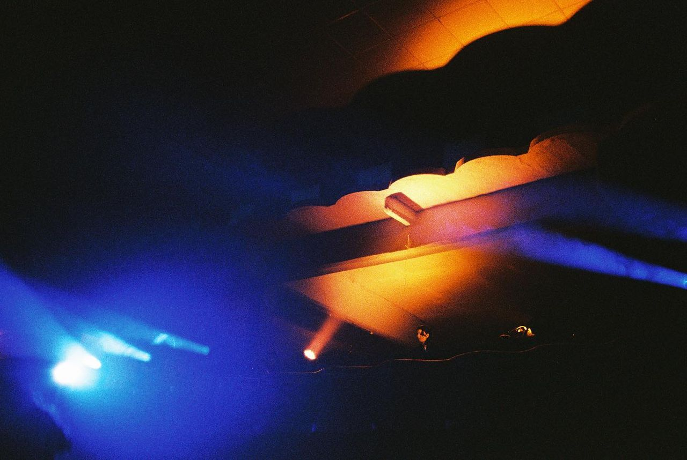
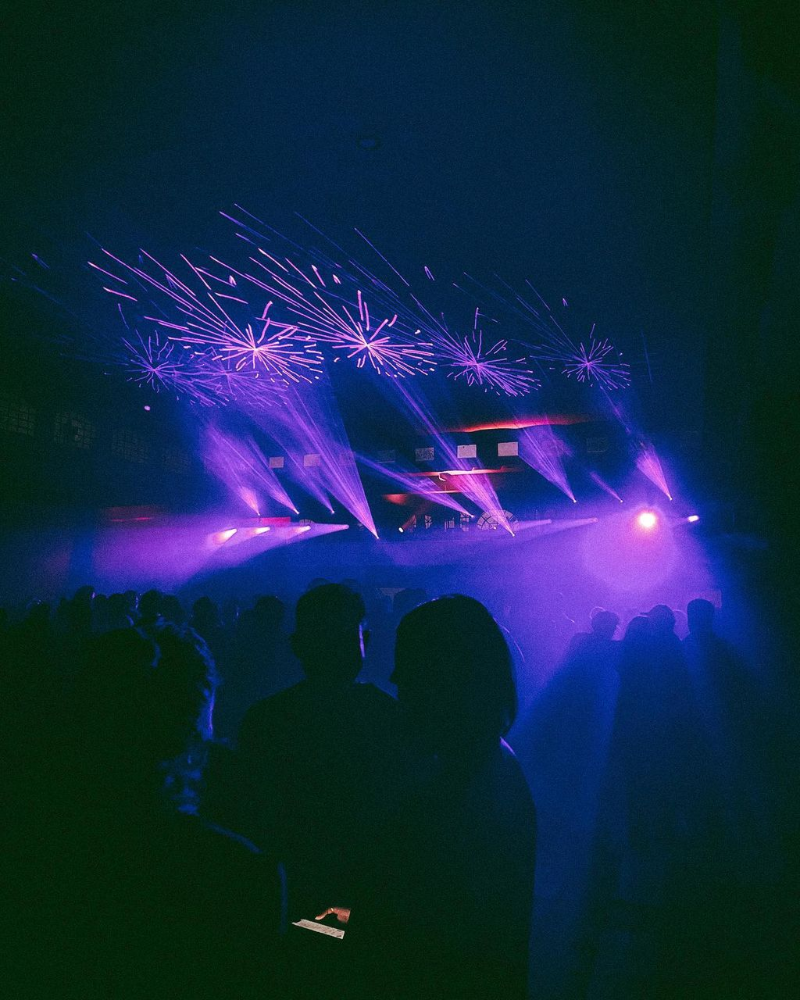
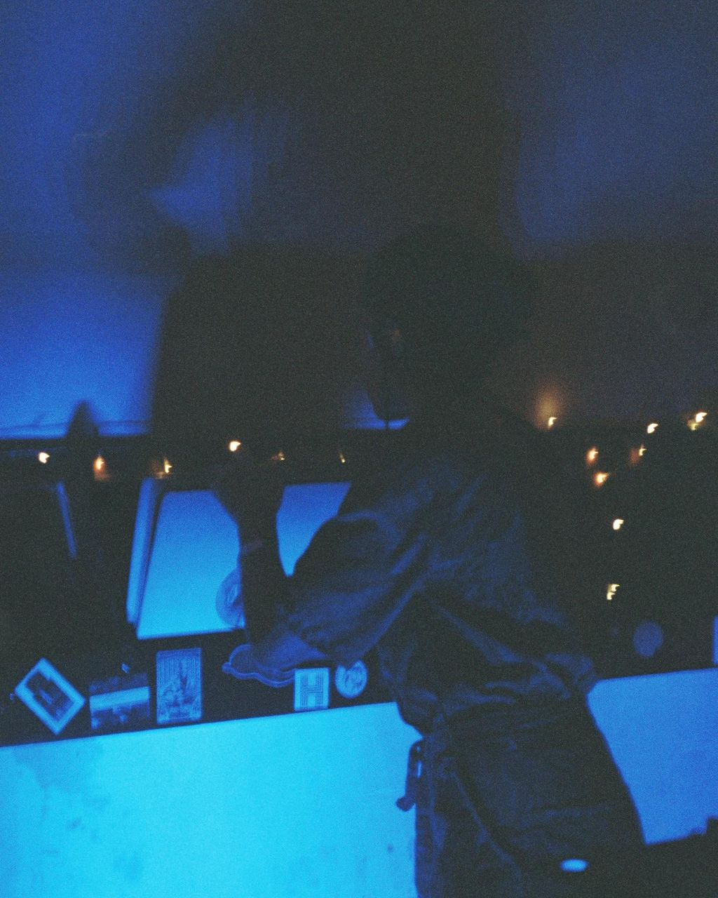
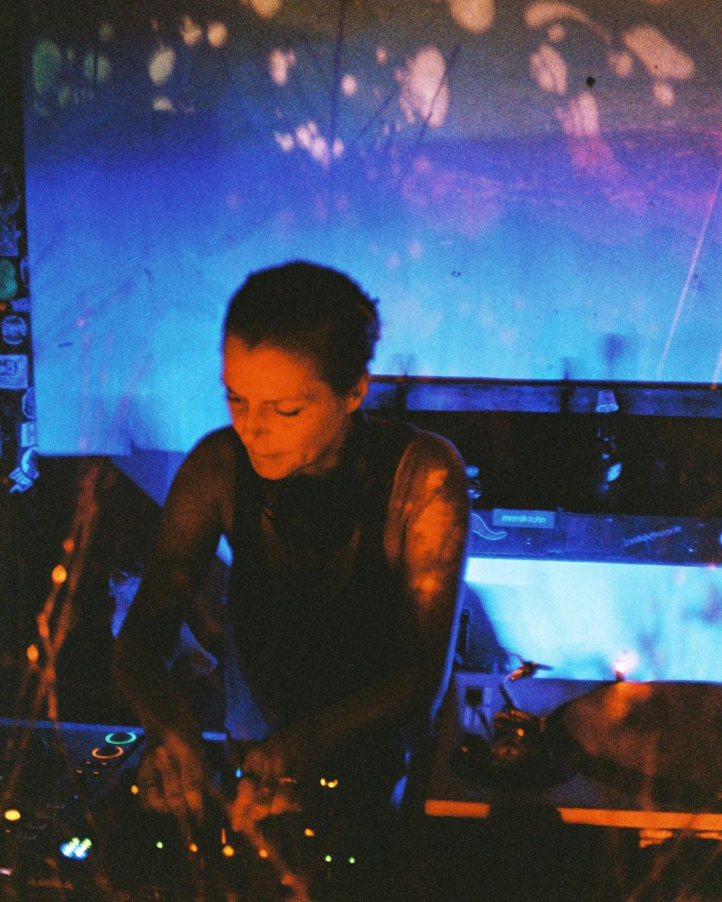

Graphic designer, photographer, and screenprinter, based in McAllen, Texas
Two bodies of work on film. The first is the floor: rooms, decks, and the people
in front of them. The second is everywhere else — Texas roadside, Mexico City, cars, motels.
Night
22 photographs. 35mm and point-and-shoot,
Olympus AF-1 Twin, Canon Prima Super 115, Kodak, Cinestill, Fujifilm.
01Espacio Sonoro at Side Room
02Crowded floorsOlympus AF-1 Twin | Kodak Ultra Max 400
03Baby Vulture, Antimateria Sonora
04Nina Kraviz, September 2023
05Capricho Studio ClubOlympus AF-1 Twin | Kodak Portra 800
06Dry Cleaning at MohawkOlympus AF-1 Twin | Cinestill 800
07Satoshi Tomiie in the darkSatoshi in the dark | spinning at
08Mirrored dance, Bar Standard

09Omar S, Bar Standard

10ATV Records, Miamismokey nights in Miami | at former ATV Records ft. Satoshi Tommie

11Los colores de rave12Mama Snake, Freeworld

13Comunite x Yuyucineclub

14Maayan Nidam at CaprichoOlympus AF-1 Twin | Fujifilm 400

15Margaret Dygas at CaprichoOlympus AF-1 Twin | Fujifilm 400